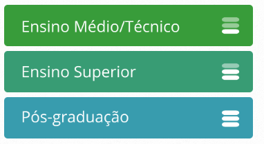
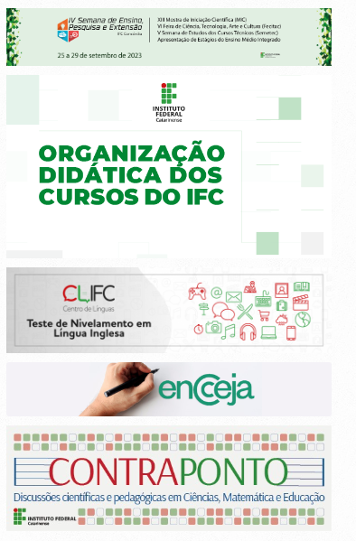
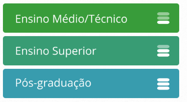
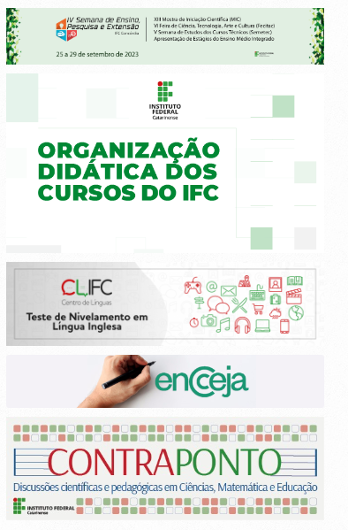

Quem visitar a Expo Concórdia 2023 poderá conhecer um pouco do setor de bovinocultura leiteira do Instituto Federal Catarinense campus Concórdia. A instituição está expondo seis novilhas da raça holandesa no setor agropecuário da feira, aberto desde o dia 6. A Expo Concórdia iniciou dia 1º de setembro e vai até dia 10, domingo [...]

Instituição abrirá mais 35 vagas no Técnico em informática para Internet Iniciaram hoje, 4 de agosto, as inscrições para o processo seletivo dos cursos técnicos integrados ao Ensino Médio do Instituto Federal Catarinense, para ingresso no primeiro semestre letivo de 2024. Para o campus Concórdia há 245 vagas, sendo 140 para o curso Técnico [...]
 


